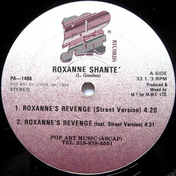

Welcome
This site explores the rhetorical, cultural, and historical significance of “Roxanne’s Revenge.”
Quote from Roxanne Shanté
“I had to stand up for myself — I wasn’t gonna let them just clown me.” — Roxanne Shanté
Introductions
Roxanne Shanté’s “Roxanne’s Revenge” wasn’t just a diss track — it was a cultural moment.
Rhetorical Power
Shanté’s delivery is a masterclass in rhetorical strategy. She mocks, confronts, and reclaims power.
Production & Delivery
The track was recorded in one take over Marley Marl’s beat — itself a recycled instrumental from UTFO’s “Roxanne, Roxanne.”
Visual Legacy

Roxanne Shanté album cover, 1985

Original CD release of “Roxanne’s Revenge”

Original vinyl cover
Conclusion
“Roxanne’s Revenge” didn’t just start a feud — it cracked the industry open for women and rewrote what battle rap could be.